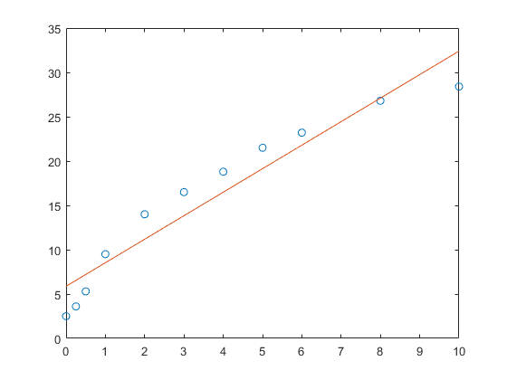
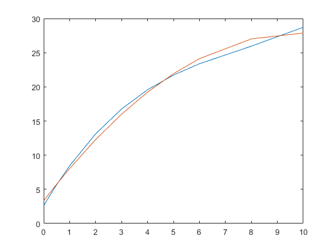

Contents
(a)
x = [0,0.25,0.5,1,2,3,4,5,6,8,10];
y = [2.5,3.6,5.3,9.5,14.0,16.5,18.8,21.5,23.2,26.8,28.4];
p = polyfit(x,y,1)
theoretical_y = polyval(p,x)
plot(x,y,'o',x,theoretical_y)
p =
2.6522 5.8796
theoretical_y =
Columns 1 through 7
5.8796 6.5427 7.2057 8.5318 11.1840 13.8362 16.4883
Columns 8 through 11
19.1405 21.7927 27.0971 32.4014

(b)
resedual=y-theoretical_y
bar(x,resedual)
n=length(x);
s=polyfit(x,y,2)
y_new=polyval(s,x)
resedual_cubic=y-y_new
y_mean=sum(y)/n
sum_squared_regression= sum(resedual_cubic)
total_sum_of_square= sum(y-y_mean)
r_square_for_cubic=1-sum_squared_regression/total_sum_of_square
q = polyfit(x,y,3)
y_new_new = polyval(q,x)
resedual_quadratic=y-y_new_new
SSR= sum(resedual_quadratic)
SST= sum(y-y_mean)
r_square_for_quadratic= 1-abs(SSR/SST)
plot(x,y_new_new,x,y_new)
resedual =
Columns 1 through 7
-3.3796 -2.9427 -1.9057 0.9682 2.8160 2.6638 2.3117
Columns 8 through 11
2.3595 1.4073 -0.2971 -4.0014
s =
-0.2534 4.9909 3.3104
y_new =
Columns 1 through 7
3.3104 4.5423 5.7425 8.0479 12.2785 16.0023 19.2192
Columns 8 through 11
21.9293 24.1325 27.0183 27.8767
resedual_cubic =
Columns 1 through 7
-0.8104 -0.9423 -0.4425 1.4521 1.7215 0.4977 -0.4192
Columns 8 through 11
-0.4293 -0.9325 -0.2183 0.5233
y_mean =
15.4636
sum_squared_regression =
3.1086e-15
total_sum_of_square =
-3.5527e-14
r_square_for_cubic =
1.0875
q =
0.0296 -0.6865 6.5207 2.5822
y_new_new =
Columns 1 through 7
2.5822 4.1699 5.6746 8.4460 13.1142 16.7645 19.5741
Columns 8 through 11
21.7206 23.3814 25.9558 28.7169
resedual_quadratic =
Columns 1 through 7
-0.0822 -0.5699 -0.3746 1.0540 0.8858 -0.2645 -0.7741
Columns 8 through 11
-0.2206 -0.1814 0.8442 -0.3169
SSR =
2.0872e-14
SST =
-3.5527e-14
r_square_for_quadratic =
0.4125
